2012 Deluxe Edition
Political Correctness
The half-black and half-white man was removed. The characters marveling over him were flipped, since he's no longer an interesting subject:
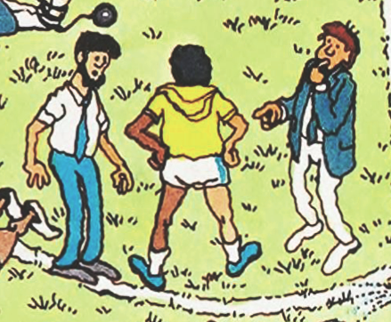
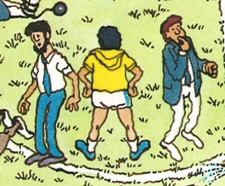
This umpire's starter pistols were redrawn to look less like real guns:
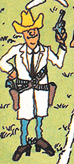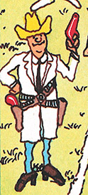
This umpire's starter pistol was removed entirely. The squirt gun was kept, but the races of the kids were
flipped, so it's now being shot by the white kid:
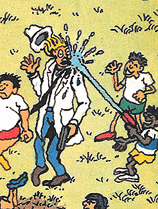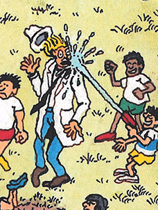
Fat kids were slimmed down:
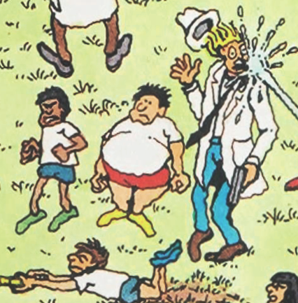
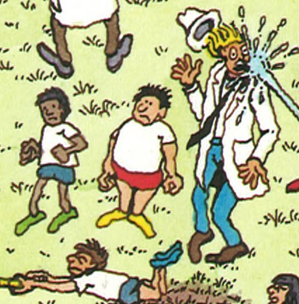
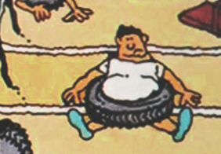
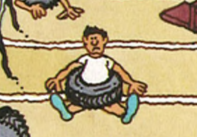
 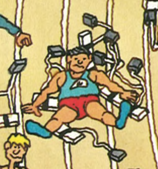
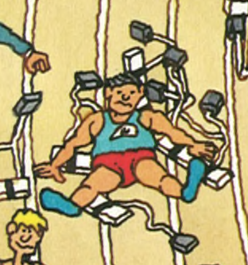
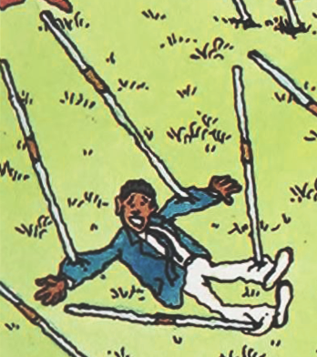
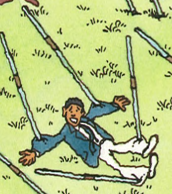
Political Correctness
Violence against women was removed. This man is no longer punching the woman:
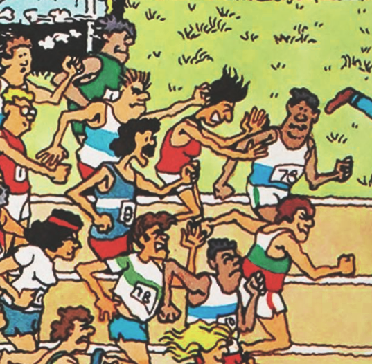
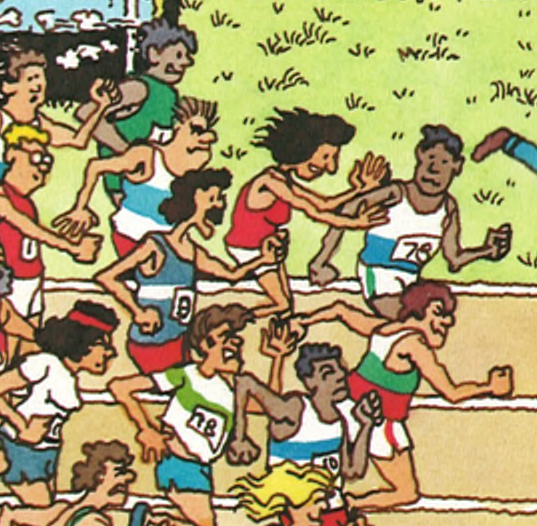
In this case, the woman being assaulted was changed to a man:
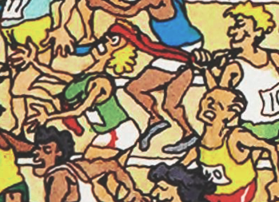
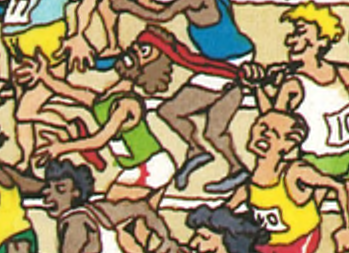
This guy's arms were shortened:
 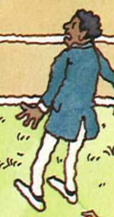
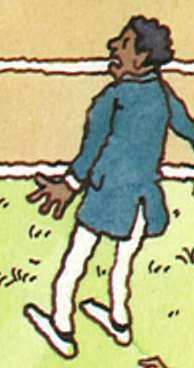
 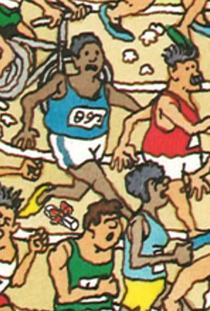
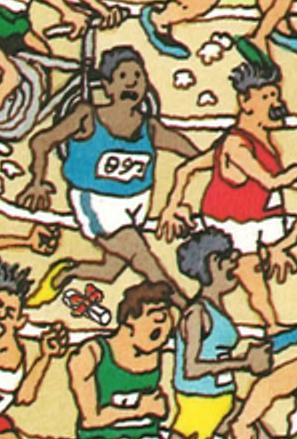
 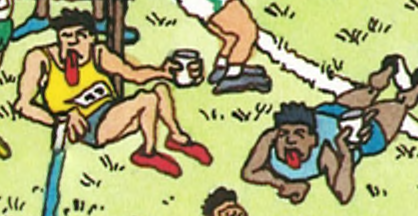
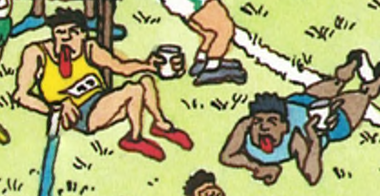